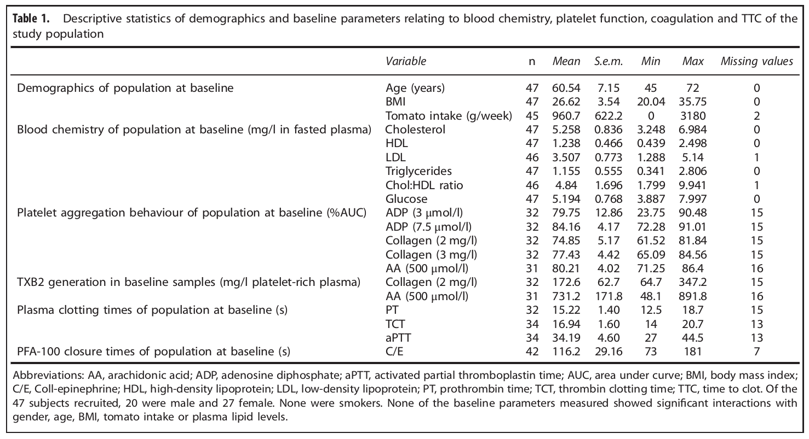

<?xml version="1.0" encoding="UTF-8"?>
<table title="table1" id="table1" class="tabcontent" xmlns="http://www.w3.org/1999/xhtml">
 <tr>
  <td>
   
   <p>../../cm-ucl/corpus-oa-pmr-v02/10.1038_ejcn.2016.222/tables/table1/table.png</p>
  </td>
  <td>
   <table class="table">
    <caption/>
    <tr>
     <th class="cell">Abbreviations: AA, arachidonic acid; ADP, adenosine diphosphate; aPTT, activated partial thromboplastin time; AUC, area under curve; BMI, body mass index; C/E, Coll-epinephrine; HDL, high-density lipoprotein; LDL, low-density lipoprotein; PT, prothrombin time; TCT, thrombin clotting time; TTC, time to clot. Of the 47 subjects recruited, 20 were male and 27 female. None were smokers. None of the baseline parameters measured showed signifcant interactions with gender, age, BMI, tomato intake or plasma lipid levels. </th>
    </tr>
   </table>
   <p>../../cm-ucl/corpus-oa-pmr-v02/10.1038_ejcn.2016.222/tables/table1/table.svg.html</p>
  </td>
 </tr>
</table>
